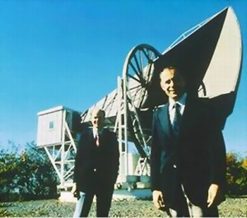
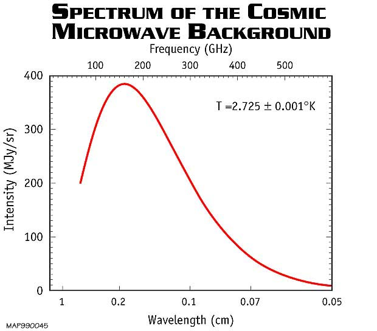

Fuentes de ruido en el Espacio Exterior
... Y como mitigarlas
Creado por Luis Sánchez
Indice
- El ruido en el espacio exterior:
- Ruido Extrinseco: Ruido Cósmico
- Ruido Intrínseco: Extrema diferencia de temperatura
- Como afecta:
- Comunicación vía microondas. Introducción
- Uplink
- Downlink
- Conclusiones y bibliografía.
Ruido Extrinseco: Ruido Cósmico
- Predicha en 1948 por los físicos George Gamow, Ralph Alpher, y Robert Herman.
- Descubierta experimentalmente de manera independiente por Arno Penzias y Robert Wilson en 1968
- La teoría actual más fuerte sugiere que esta radición son los "ecos" de la creación del universo por el big-bang

¿Que tiene?
- Radiación prácticamente igual a la de
un cuerpo negro a 2.78K
- Isotrópico
- Las variaciones de valor
eficas no superan los 18uK
- Despreciable
para aplicaciones de ingeniera

- http://www.roe.ac.uk/ifa/postgrad/pedagogy/2006_tojeiro.pdf